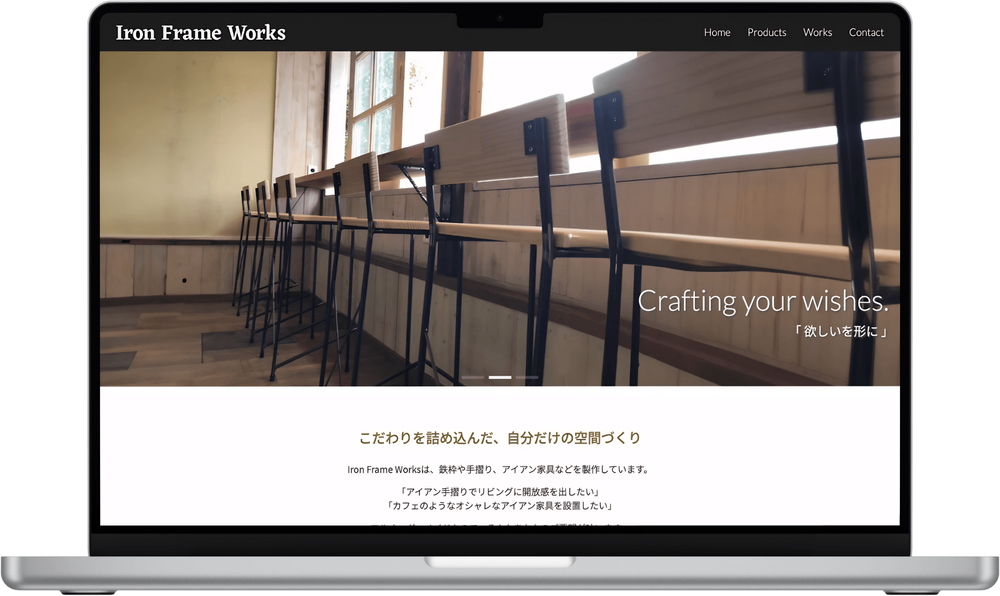
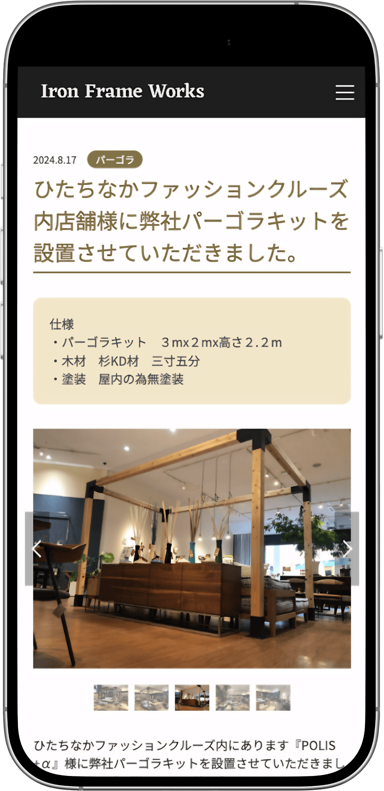
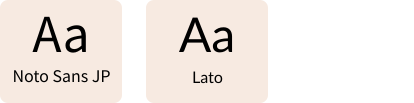
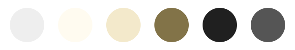

Iron Frame Works
Steelworks company corporate website

概要
アイアン家具や手摺り、パーゴラの製作を手掛ける「Iron Frame Works」様のコーポレートサイトです。
事業内容や製作実績が分かりやすく伝わるよう、情報を整理したシンプルな構成を採用しました。
更新のしやすさも考慮し、WordPressを導入することで運用面にも配慮したサイトとなっています。
工夫したポイント
施工事例を分かりやすく掲載
オーダーメイド製作の実績を分かりやすく紹介できるよう、施工事例を中心とした情報設計を行いました。
スライドショーを活用して複数の写真を掲載し、実際の制作物や施工イメージが伝わりやすい構成としています。
更新しやすいWordPress設計
施工事例を継続的に追加できるよう、WordPressを導入しました。
カスタムフィールドを実装し、管理画面から簡単に更新できる設計としています。スライドショーの画像も管理画面で設定可能とし、運用しやすさに配慮しました。
限られた予算の中での最適化
制作予算や運用面を考慮し、装飾を増やすよりも情報の分かりやすさを優先しました。
必要な情報を整理し、問い合わせにつながるシンプルな導線設計を心掛けています。

制作を通して
本案件では、デザイン性だけでなく予算や運用面も含めて最適な提案を行うことの重要性を学びました。
限られた条件の中でも、ユーザーに必要な情報を分かりやすく届けることを意識し、写真の見せ方や情報整理に注力しています。
「また、WordPressによる更新性を確保することで、公開後も継続的に運用しやすいサイトを目指しました。
Webサイト制作では見た目の美しさだけでなく、運用性やクライアントの目的に合わせた設計が重要であることを改めて実感した案件です。
デザインシステム
Typography

Color palette
